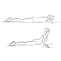

Strength and Low Carb: Stretching
Review the images below and how they help with different strength exercises.
Chest stretch helps after doing push-ups.
Arm stretch helps after curls.

Leg stretch helps after squats and lunges.
Some additional stretches that are good for your core are:
Back stretch matches to pull ups.

Stomach stretch helps with abs exercise.